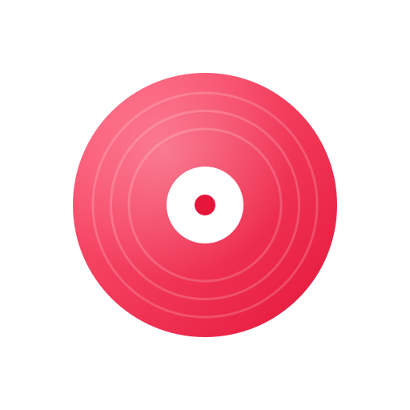

Store de Leo
Mes apps, à installer sur iPhone et Android

Ajouter à SideStoreInstalle et met à jour Écho tout seul
Ouvrir
Ajouter à AltStoreMême chose avec AltStore
Ouvrir
Fichier iPhone (.ipa)Pour Sideloadly sur PC · {{IPA_MB}} Mo
Télécharger
App Android (.apk){{APK_MB}} Mo
Télécharger
Version webSans installation · notifications sur l'écran d'accueil
Ouvrir
Installer sur iPhone
Avec Sideloadly (le plus simple, depuis le PC)
- Installe Sideloadly et iTunes (version du site d'Apple) sur ton PC.
- Branche ton iPhone en USB, télécharge le fichier .ipa ci-dessus.
- Glisse le .ipa dans Sideloadly, mets ton identifiant Apple, clique Start.
- Sur l'iPhone : Réglages → Général → VPN et gestion de l'appareil → fais confiance à ton identifiant.
- Active le mode développeur si l'iPhone le demande (Réglages → Confidentialité et sécurité).
Avec SideStore (mises à jour automatiques)
- Installe SideStore une fois (guide sur sidestore.io, avec le PC).
- Sur l'iPhone, touche Ajouter à SideStore ci-dessus, puis installe Écho.
- SideStore re-signe Écho tout seul avant les 7 jours.
Avec un identifiant Apple gratuit, une app installée ainsi doit être re-signée tous les 7 jours (SideStore / AltStore le font automatiquement) et 3 apps maximum. Adresse de la source : {{SOURCE_URL}}
Installer sur Android
- Télécharge le fichier .apk depuis ton téléphone.
- Ouvre-le et autorise l'installation depuis cette source si Android le demande.
Écho {{VERSION}} · fabriqué automatiquement avec GitHub Actions